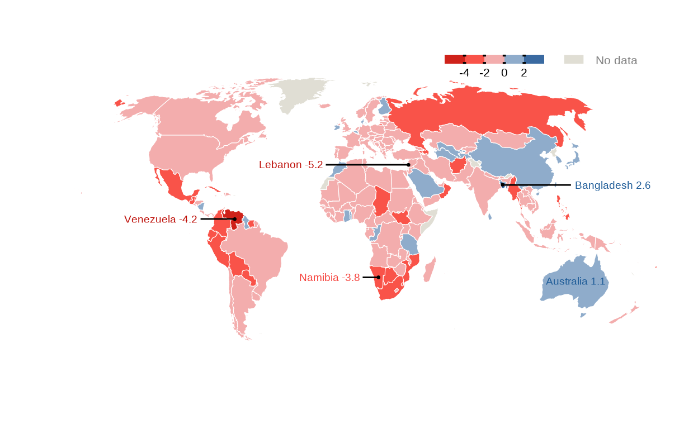
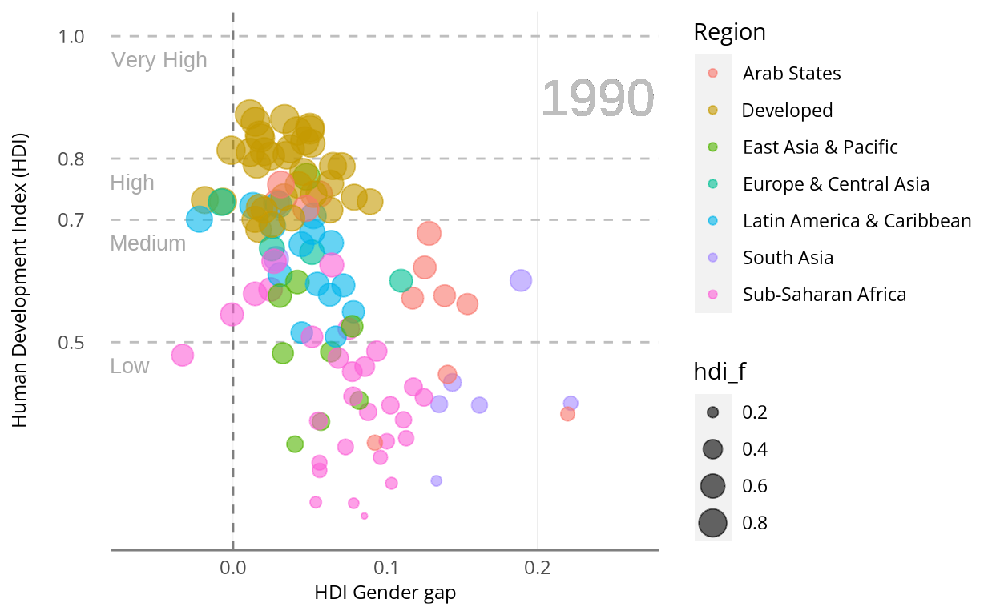
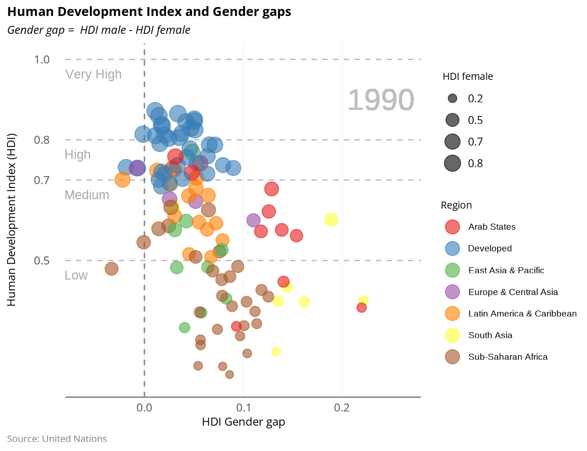

The Economist published this map in September 2022 in order to highlight that ‘living standards are moving in the wrong direction’. It is striking how most countries in the world have worsened their scores in the Human Development Index (HDI) between 2019 and 2021, which makes the map mainly red. The HDI, calculated by the United Nations since 1990, is a summary measure of average achievement in three key dimensions of human development: life expectancy, education and have a decent standard of living (income per person.)
The aim of this tutorial is to reproduce the map and propose an alternative visualization using the same dataset.

sysfonts::font_add_google("Open Sans", family = "Open Sans")
showtext::showtext_auto()Getting and cleaning data
All the data needed for this map can be downloaded directly from the UNDP website. They provide a complete data set with the latest ranking (2021), the index value for each country since 1990 and its components. Since the map only shows the change between 2019 and 2021, I select a subset of the data to compute the growth change in the required period, the country name and the ISO3 code.
To draw the world map, the giscoR packaged is used to get the geographic information of each country in an sf format, which is required to use geom_sf in ggplot.
world <- giscoR::gisco_get_countries()
class(world)[1] "sf" "data.frame"Now, the geographical information and the HDI data can be joined by the ISO3 code to form the complete dataset. This dataset must also be class sf, so I use st_as_sf to keep this format. Then, the Antarctica is removed from the final data, since this region does not appear in the original map.
# checking that both data sets contain the same countries
hdi_data <- HDI %>%
distinct(iso3) %>%
as_vector()
nat_data <- world$ISO3_CODE
differ <- as.data.frame(setdiff(hdi_data, nat_data))
all_data <- st_as_sf(left_join(world, my_data, by = c("ISO3_CODE" = "iso3")))
all_data <- all_data %>% filter(!ISO3_CODE %in% c("ATA"))
summary(all_data) CNTR_ID NAME_ENGL ISO3_CODE
Length:256 Length:256 Length:256
Class :character Class :character Class :character
Mode :character Mode :character Mode :character
CNTR_NAME FID country
Length:256 Length:256 Length:256
Class :character Class :character Class :character
Mode :character Mode :character Mode :character
hdi_2019 hdi_2021 change
Min. :0.3930 Min. :0.3850 Min. :-5.2000
1st Qu.:0.6105 1st Qu.:0.5995 1st Qu.:-1.5000
Median :0.7460 Median :0.7390 Median :-0.9000
Mean :0.7275 Mean :0.7206 Mean :-0.9838
3rd Qu.:0.8435 3rd Qu.:0.8350 3rd Qu.:-0.3000
Max. :0.9620 Max. :0.9620 Max. : 2.6000
NA's :65 NA's :65 NA's :65
geometry
MULTIPOLYGON :134
POLYGON :122
epsg:4326 : 0
+proj=long...: 0
Basic elements
Map and main legend
To start with, the map is plotted by using geom_sf, which automatically interprets the geographical data. The fill aesthetic is set to the variable “change”, and the proper scale fill is added to fix the same breaks and colors than The Economist. The guide for it is guide_colorsteps. Color is fixed in white and the size in 0.1 to generate the lines for countries’ contour. Theme_map is added, since it sets all chart elements in blank but for the map.
m <- ggplot(data = all_data) +
geom_sf(aes(fill = change), color = "white", size = 0.1) +
scale_fill_stepsn(
breaks = c(-4, -2, 0, 2),
colors = c("#be0f08", "#f6423c", "#ffa9a6", "#a4bfd6", "#1e5c98"),
na.value = "#e0ded4",
guide = guide_colorsteps(
even.steps = TRUE,
order = 1,
ticks = TRUE,
ticks.colour = "black",
ticks.linewidth = 1,
direction = "horizontal",
title = NULL,
draw.llim = TRUE,
draw.ulim = TRUE,
frame.color = "black",
label.theme = element_text(size = 8))) +
theme_map()
mSecond legend
Since the previous legend does not show the missing values, another legend has to be configured for them. To do so, I get a very small region (Gibraltar), and add it as another map layer with color aesthetic in blank. For this aes, a scale color is defined in which a guide_bins is added specifying the proper color in the override.aes argument.
Gibraltar <- all_data %>% filter(ISO3_CODE == "GIB")
m <- m + geom_sf(data = Gibraltar, aes(color = "")) +
scale_color_discrete(guide = guide_legend(
axis = FALSE,
label = FALSE,
title = "No data",
title.position = "right",
title.vjust = 0.5,
title.hjust = 0,
title.theme = element_text(
size = 8,
color = "grey50"),
override.aes = list(color = "#e0ded4", fill = "#e0ded4"),
order = 2,
direction = "horizontal"))
m
Now that we have both legends, we adjust them with themeoptions to place them in their correct positions and with the same spaces in between
m <- m + theme(
legend.position = c(0.63, 0.95),
legend.key = element_rect(color = "white"),
legend.key.height = unit(2.2, "mm"),
legend.key.width = unit(4.7, "mm"),
legend.margin = margin(0, 0, 0, 0),
legend.direction = "horizontal",
legend.box = "horizontal",
legend.spacing = unit(4.7, "mm"),
legend.spacing.y = unit(1, "mm"),
legend.background = element_blank())
m
Projection and annotations
To add the black points placed in the center of each of the countries annotated, we can filter them from the
dataset and get their geographical centers with st_point_on_surface
Another dataframe is created for Australia
Then, we can add them in two different layers
m <- m + geom_sf_text(
data = australia, aes(label = paste(NAME_ENGL, "1.1")),
size = 2.5,
color = "#1e5c98") +
geom_sf(data = countries_center, size = 0.5)
mProjection
To this point, all the geographic information available in our dataset has been used, but the map does not look the same than the original because by default the projection used by geom_sf is …… Since the one used by The Economist is the Robinson projection, the coordinate system of the map has to be changed in accordance.

Spatial coordinates
After changing the projection, all the following annotations must be in the same Coordinate Reference System, so a new sf object is created with the standard coordinates (latitude and longitude) of each country to be annotated and other for the end of the segment linked to it. Then, they are transformed to the Robinson projection.
lebanon <- st_sfc(st_point(c(35.49, 33.9)), crs = 4326)
lebanon <- st_transform(lebanon, "+proj=robin")
lebanon_end <- st_sfc(st_point(c(-14, 33.9)), crs = 4326)
lebanon_end <- st_transform(lebanon_end, "+proj=robin")
namibia <- st_sfc(st_point(c(17.7, -23)), crs = 4326)
namibia <- st_transform(namibia, "+proj=robin")
namibia_end <- st_sfc(st_point(c(8, -23)), crs = 4326)
namibia_end <- st_transform(namibia_end, "+proj=robin")
venezuela <- st_sfc(st_point(c(-65, 6.5)), crs = 4326)
venezuela <- st_transform(venezuela, "+proj=robin")
venezuela_end <- st_sfc(st_point(c(-85, 6.5)), crs = 4326)
venezuela_end <- st_transform(venezuela_end, "+proj=robin")
bangladesh <- st_sfc(st_point(c(90, 23.7)), crs = 4326)
bangladesh <- st_transform(bangladesh, "+proj=robin")
bangladesh_end <- st_sfc(st_point(c(130, 23.7)), crs = 4326)
bangladesh_end <- st_transform(bangladesh_end, "+proj=robin")Annotations
With the elements above, segments and text annotations can be put in place using annotate. The name and the change value of each country are used as labels, and their corresponding colors are also added.
m <- m + annotate("segment",
x = lebanon[[1]][1], y = lebanon[[1]][2],
xend = lebanon_end[[1]][1], yend = lebanon_end[[1]][2], size = 0.5) +
annotate("text",
x = lebanon_end[[1]][1], y = lebanon_end[[1]][2],
label = "Lebanon -5.2",
hjust = 1.05,
color = "#be0f08",
size = 2.5) +
annotate("segment",
x = namibia[[1]][1], y = namibia[[1]][2],
xend = namibia_end[[1]][1], yend = namibia_end[[1]][2], size = 0.5) +
annotate("text",
x = namibia_end[[1]][1], y = namibia_end[[1]][2],
label = "Namibia -3.8",
hjust = 1.05,
color = "#f6423c",
size = 2.5) +
annotate("segment",
x = venezuela[[1]][1], y = venezuela[[1]][2],
xend = venezuela_end[[1]][1], yend = venezuela_end[[1]][2], size = 0.5) +
annotate("text",
x = venezuela_end[[1]][1], y = venezuela_end[[1]][2],
label = "Venezuela -4.2",
hjust = 1.05,
color = "#be0f08",
size = 2.5) +
annotate("segment",
x = bangladesh[[1]][1], y = bangladesh[[1]][2],
xend = bangladesh_end[[1]][1], yend = bangladesh_end[[1]][2], size = 0.5) +
annotate("text",
x = bangladesh_end[[1]][1], y = bangladesh_end[[1]][2],
label = "Bangladesh 2.6",
hjust = -0.05,
color = "#1e5c98",
size = 2.5)
m
Final result
Lastly, adding the proper title, subtitle and caption, and placing them in the same positions, the final map is achieved. The font used is “Open Sans”, which can be downloaded from Google Fonts.
m + labs(
title = "What a time to be alive",
subtitle = "Change in UN Human Development Index, 2019-21, %",
caption = "Source: United Nations") +
theme(
plot.title = element_text(
face = "bold",
family = "Open Sans",
size = 8,
hjust = 0.14,
margin = margin(10, 0, 5, 0)),
plot.title.position = "panel",
plot.subtitle = element_text(
size = 8,
family = "Open Sans",
hjust = 0.195,
margin = margin(0, 0, 1, 0)),
plot.caption = element_text(
size = 6.5,
family = "Open Sans",
hjust = 0.14,
color = "grey50",
margin = margin(0, 0, 0, 0)),
plot.caption.position = "panel")
Alternative visualization
The Economist’s map shows just a narrow time span of the evolution of living standards, and it does not allow to see which areas are better off worldwide either. Since the data provided by UN does contain all this information, I want to produce a chart that convey regional disparities and temporal evolution.
Additionally, as the HDI index is also produce separately for men and women, it is possible to compute the difference between them for each country and year (if available). In this way, a measure of the gender gap is generated as HDI male - HDI female, whose evolution in time can also be tracked. In this way, a gender perspective is added to the alternative visualization.
Preparing data
The UN’s dataset is in a wide format, with years added to the name of each variable, having more than 1000 columns. In order to produce a tidy dataset with only the required information, I compute it by joining 3 different sub dataframes (main index, male and female) by country and year.
HDI <- HDI %>% rename(ranking_2021 = hdi_rank_2021)
p <- HDI %>%
select(matches("^(hdi)(_)([0-9]+)$"), iso3, country, ranking_2021, region, hdicode) %>%
pivot_longer(contains("hdi_"),
names_sep = "_",
names_to = c("hdi", "year"), values_to = "value"
)
f <- HDI %>%
select(contains("hdi_f"), country) %>%
pivot_longer(contains("hdi_"), names_to = c("year"), values_to = "hdi_f") %>%
mutate(year = str_remove(year, "hdi_f_"))
m <- HDI %>%
select(contains("hdi_m"), country) %>%
pivot_longer(contains("hdi_"), names_to = c("year"), values_to = "hdi_m") %>%
mutate(year = str_remove(year, "hdi_m_"))
hditotal <- left_join(p, m, by = c("year" = "year", "country" = "country"))
hditotal <- left_join(hditotal, f, by = c("year" = "year", "country" = "country"))Once the data is ready, I generate the gender gap variable and convert year to numeric. In addition, I remove the observations related to aggregated areas () and create a Region variable based on the original one used to classify developing regions, where missing values correspond to developed countries.
hditotal <- hditotal %>%
mutate(
f_m_diff = hdi_m - hdi_f,
year = as.numeric(year)
) %>%
filter(!startsWith(iso3, "ZZ")) %>%
mutate(Region = case_when(
region == "AS" ~ "Arab States",
region == "EAP" ~ "East Asia & Pacific",
region == "ECA" ~ "Europe & Central Asia",
region == "LAC" ~ "Latin America & Caribbean",
region == "SA" ~ "South Asia",
region == "SSA" ~ "Sub-Saharan Africa",
TRUE ~ "Developed"))Axes and annotations
To start with, I create a vector with the different levels of HDI according to UNDP, which will be used to mark the Y axe.
The axes are fix in a way that maximize the ink ratio, so I first analyze the range of the variables to be displayed in all available years
range(hditotal$value, na.rm = TRUE)[1] 0.216 0.962range(hditotal$f_m_diff, na.rm = TRUE)[1] -0.0373798 0.2707924The year 1990 is selected to create the static plot. The Y axe starts in 0.2 since is the lowest value achieved by HDI, and maximum 1. The X axe limits allow to show the maximum and minimum values of HDI Gender Gap.
a <- hditotal %>%
filter(year == 1990) %>%
ggplot() +
scale_y_continuous(limits = c(0.2, 1), breaks = hdi_levels) +
scale_x_continuous(limits = c(-0.08, 0.28), expand = c(0, 0)) +
xlab("HDI Gender gap") +
ylab("Human Development Index (HDI)")
a
Notice that countries in which women are better off than men have a negative value, so they will appear on the left size of 0. To highlight this fact, I add a dashed line in 0. I also add dashed lines in each of the levels of HDI to differentiate them clearly. Additionally, I add an annotation showing the corresponding level under the dashed line. To do so, I specify its position just two decimals below the HDI level mark.
hdi_pos_levels <- c(0.48, 0.68, 0.78, 0.98)
a <- a + geom_hline(yintercept = c(0.5, 0.7, 0.8, 1), linetype = "dashed", color = "grey") +
geom_vline(xintercept = c(0), linetype = "dashed", color = "grey50") +
annotate("text",
y = hdi_pos_levels, x = -0.08,
color = "darkgray", vjust = 1.3, hjust = 0, size = 3.5,
label = hdi_text_levels)
a
Since I want the background to be blank and other visual details differently, I adjust the elements in theme in accordance.
a <- a + theme(
text = element_text(family = "Open Sans"),
axis.line.y = element_blank(),
axis.line.x = element_line(color = "gray50"),
axis.ticks = element_blank(),
axis.text = element_text(size = 9),
axis.title = element_text(size = 9),
axis.text.y.left = element_text(margin = margin(10, 10, 10, 10)),
panel.grid.major.x = element_line(linetype = 1, color = "grey", size = 0.05),
panel.grid.minor = element_blank(),
panel.background = element_blank())
a
Now, I add the year we are referring to in a new geom_text layer.

Data
We are ready to add the data. In order to show the situation of each country in each year, I will generate a scatter plot with using geom_jitter, in which the aesthetics are set as follows:
- Human Development Index value for the given year mapped to position Y
- HDI Gender Gap mapped to position X
- HDI female for the given year mapped to size
- Development region mapped to color (hue)
a <- a + geom_jitter(aes(y = value, x = f_m_diff, color = Region, size = hdi_f), alpha = 0.6)
a
Since I want to adjust the color paletter and the elements of the legends, I add scale_color_brewer for the color, and scale_size_area for the bubbles’ size.
In them, I set the legends options with guide_legend and make bigger color points and title adjustments.
a <- a +
scale_color_brewer(
palette = "Set1",
guide = guide_legend(
title = "Region",
override.aes = list(size = 5),
direction = "vertical",
title.vjust = 1,
title.hjust = 0,
title.position = "top",
order = 2,
label.theme = element_text(size = 7))) +
scale_size_area(
breaks = c(0.2, 0.5, 0.7, 0.8, 1),
guide = guide_legend(
title = "HDI female",
title.vjust = 1,
title.hjust = 0.5,
title.position = "top",
direction = "vertical",
label.position = "right",
order = 1))
a
Addint title, subtitle and caption
a <- a + labs(
title = "Human Development Index and Gender gaps",
subtitle = "Gender gap = HDI male - HDI female",
caption = "Source: United Nations")
a
Final static result
Tweaking legend and titles’ details to fix their sizes and background
a <- a + theme(
plot.title = element_text(face = "bold", size = 10),
plot.caption = element_text(size = 7.5, hjust = 0, color = "grey50"),
plot.subtitle = element_text(face = "italic", size = 9),
plot.title.position = "plot",
plot.caption.position = "plot",
legend.key = element_blank(),
legend.direction = "v",
legend.title = element_text(size = 8))
a
Finally, it is worth annotating the countries which are outliers or have interesting positions in the plot. To do so, I select a bunch of countries and save them in a vector. Them, I filter the dataset to get this names along with its data in 1990. Finally, I add a new geom_text
countries <- c("Spain", "Afghanistan", "China", "Yemen", "India", "Niger", "Uruguay")
labels1990 <- hditotal %>% filter(country %in% countries, year == 1990)
a_lab <- a + geom_text(
data = labels1990, aes(y = value, x = f_m_diff, label = country),
check_overlap = TRUE,
size = 3)
a_lab
Moving the wrong direction? 1990 VS 2021
Having the chart for 1990 ready, we can reproduce it for different years using %+% to use the whole data set and filtering the desired year. I create the static chart for 2021 like this
d <- a %+% (hditotal %>% filter(year == 2021))
labels2021 <- hditotal %>% filter(country %in% countries, year == 2021)
d_lab <- d + geom_text(
data = labels2021, aes(y = value, x = f_m_diff, label = country),
check_overlap = TRUE,
size = 3)
d_lab
Placing both years together, we can see the changes produced in 40 years of evolution:
- Much more countries in the “Very High” HDI area
- Less Y dispersion: concentrated in the top par, implying higher HDI in general
- Less X dispersion: most countries between 0 an 0.1 HDI gender gap, with some outliers
- Many more countries at the left side of 0, implying better liver standards for women than for men
- Less very small bubbles: in general, HDI female has risen worldwide
- Great movement up of the two most populated countries (China, India)
- Low HDI area: Sub-Saharan countries + those with highest gender gap in 2021
a_lab + (d_lab +plot_layout(guides="keep")) + plot_layout(guides="collect")
Adding motion
The main goal of this visualization is to show historical evolution taking advantage of the time series availability in UNDP data.
To achieve that, I use plotly to add the variable year as a frame aesthetic used to add animation.
In order to have the labels for all years, I do the same than for 1990 but without filtering for 1990. Then, I add the geom_text as before and save it with a new name (b). Additionally, I set scale_x_continuous(limits = c(-0.08, 0.28)) which replaces the previous one, in which expand was fixed to 0. Now, since plotly does not keep much of the formatting, I allow for more space to keep visible all the elements.
By using %+% hditotal we switch to use the whole data set
And finally… a GIF
The package gganimate also allows us add a different kind of motion. It keeps all formatting much better than ggplotly, showing clearly how regions have evolved over the past 40 years, converging towards higher levels of human development (moving up) and reducing the HDI gender gap (moving to the left).
As before, we have to use the whole data set. I create a new object for that (c). We also have to add two more lines specific of this package in which we specify the transition time and the way in which it moves.
c <- b %+% hditotal
c <- c +
transition_time(as.integer(year)) +
ease_aes("linear")Now we just use animate
# sizes fit better with this option in the gif
showtext::showtext_opts(dpi=96)
animate(c, height = 400, width = 600)